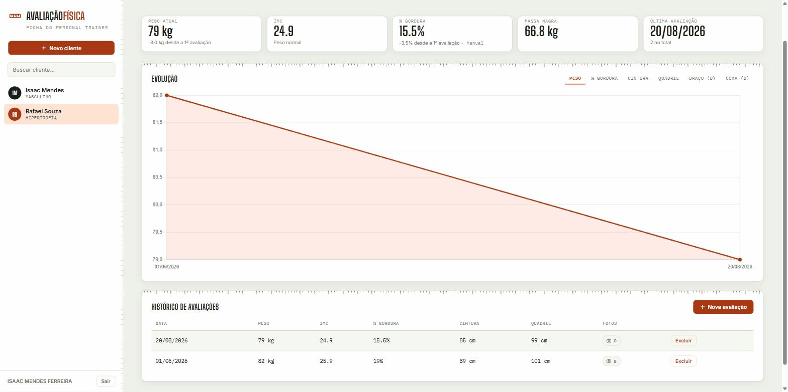
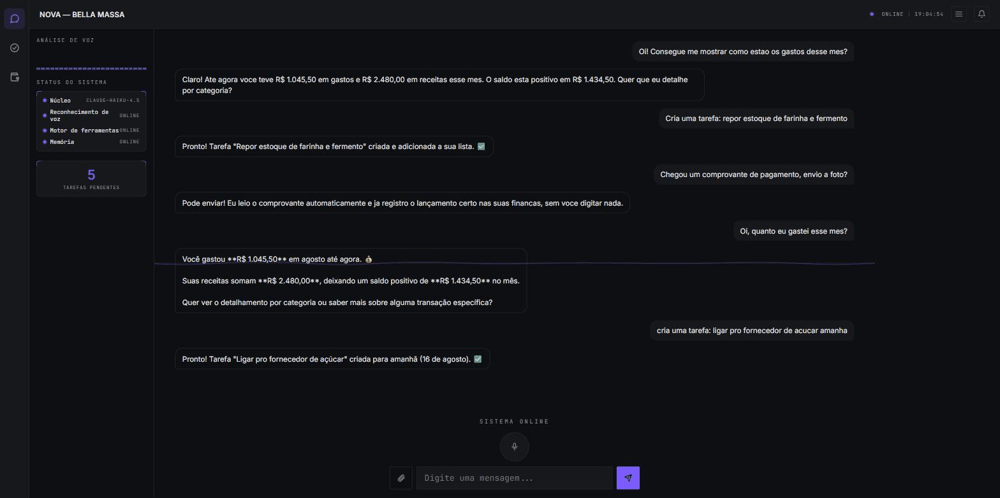
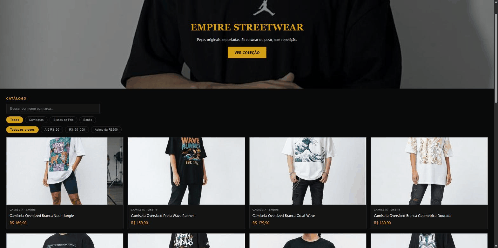

Sites e agentes de IA sob medida — desde a ideia até em produção. Abaixo, o que já ficou pronto.
3 arquivos, 3 estados diferentes.

Cadastro de cliente, histórico de avaliações com gráfico de evolução, e cálculo automático de % de gordura por 5 protocolos científicos (Pollock, Guedes, Durnin-Womersley). Fotos de progresso comparadas lado a lado com trena arrastável. Cada personal tem sua própria conta — dados isolados por usuário.

Assistente de IA que organiza o dia a dia de um pequeno negócio por chat: cria tarefas por linguagem natural, lê comprovante de pagamento automaticamente, importa extrato bancário e monta resumo financeiro com gráfico por categoria.

Catálogo com busca e filtro por categoria e faixa de preço, carrinho, checkout e confirmação de pedido — o fluxo completo de uma loja online, sem depender de plataforma pronta.